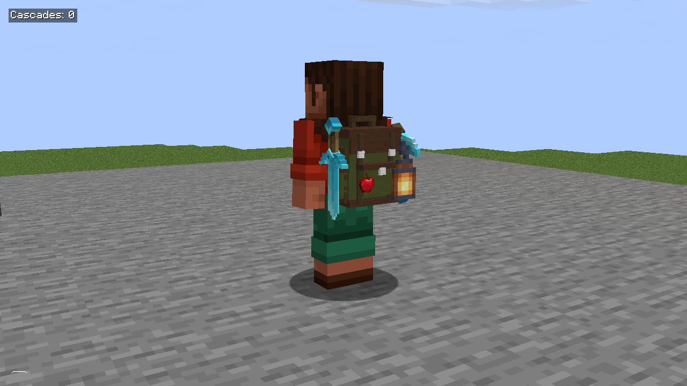
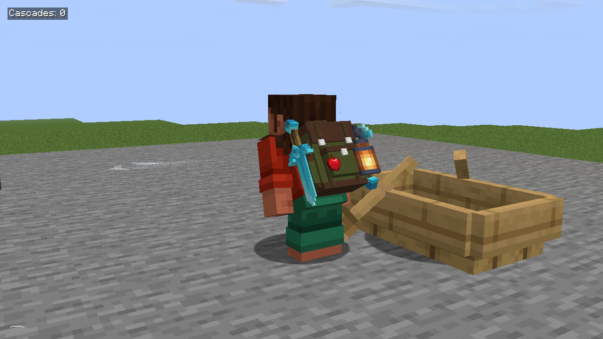
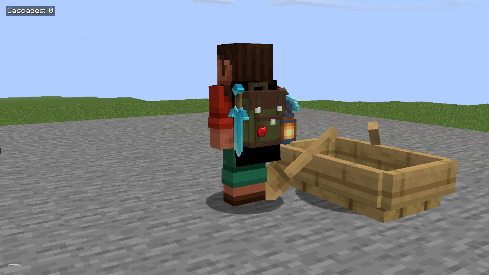
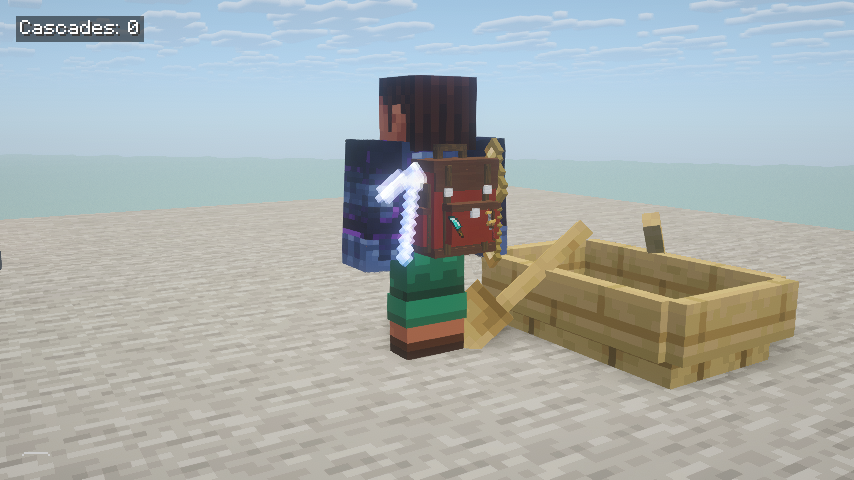
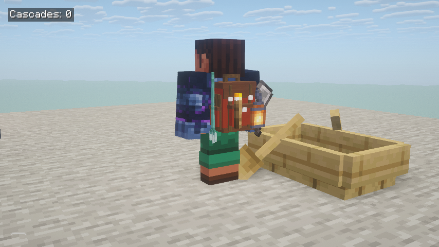
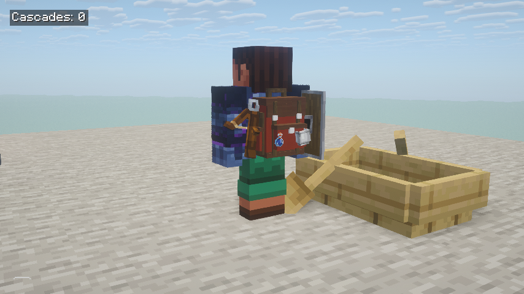
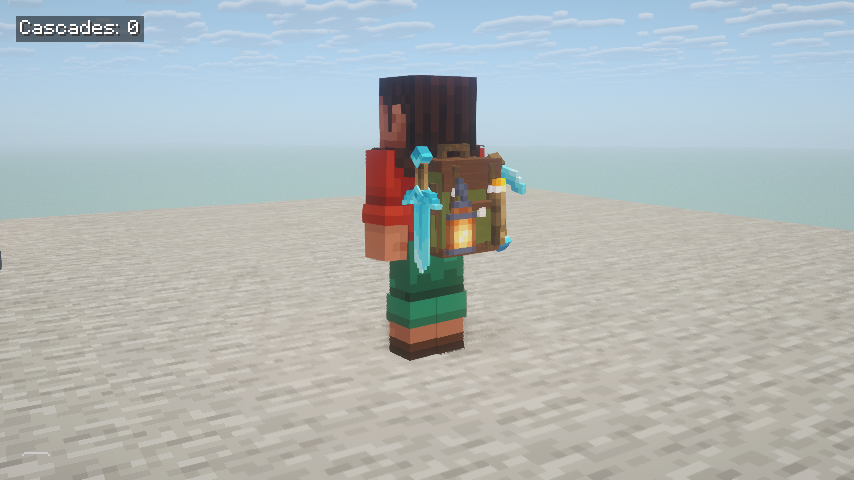

Backpacks+ · Quick Slot
Actual game captures: distinct mount reaches, visible retrieval, original pixel materials and full-pack Complementary views.
Videos are silent. Item transfers remain immediate server transactions; gestures are presentation. Verification and limits
Left long mountRight long mountFirst small mountSecond small mountRetrieving an item
Stand
Crouch
Cape
Custom
Oversized
Special
Shader Final